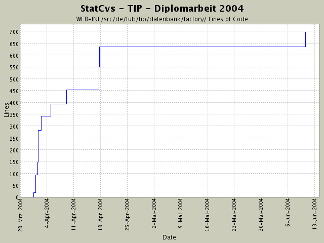

Summary Period: 2004-03-31 to 2004-06-10
[root]/WEB-INF/src/de/fub/tip/datenbank/factory

Total Lines Of Code:
697 (2004-06-13 13:05)
| Author | Changes | Lines of Code | Lines per Change |
|---|---|---|---|
| hirsch | 25 (100.0%) | 751 (100.0%) | 30.0 |
Informationsanzeige: Klassenrümpfe erstellt und in Config eingebunden.
EclipseProbleme (100 %CPU) bleiben wieder.
62 lines of code changed in:
alle Fabriken sind mit Coderümpfen ausgestattet.
Puh - was für eine Tipparbeit.
122 lines of code changed in:
Anlegen diverser neuer Rümpfe zur Implementierung
neuer Aktionen jeweils mit:
* Action
* LogicObjekt
* LogicFactory und wenn fehlend:
* VO und
* VOContainer.
96 lines of code changed in:
StatusAnzeige implementiert :-) JUCHHE!
Logik und Actions sind komplett fertig.
60 lines of code changed in:
StatusLogik vorbereiten
0 lines of code changed in:
lästiges DOC-Verzeichnis eingecheckt ....
1 lines of code changed in:
komplettes Dokumentieren der einzelnen Packages nach dem heute
rausgefundenen Schema von SUN -
juchhe!
Viel Tipparbeit - aber jetzt sieht das Javadoc-Resultat
wenigstens wie eine Anwendung aus.
Die neue statcvs-Version ist auch sehr gut!
50 lines of code changed in:
neue HTML-Seiten mit Anpassung in ResourceBundle-Datei usw.
61 lines of code changed in:
Fabrikimplementierung hat jetzt ein neues statisches Feld
Datenquelle ... damit kann jede die Fabrik aufrufende Klasse ihre eigene
Datenquelle übergeben.
Derzeit ist es ein wenig zu viel, aber später kann man dann
flexibel die Datenquellen benutzen.
Ansonsten neue LogikFactory-Objekte eingebaut
91 lines of code changed in:
eine neue Fabrik .... NachSehenswuerdigkeitenPruefer
55 lines of code changed in:
Veränderungen im LoginPruefer -
da ich so lange nicht dran war, ist mir nicht aufgefallen, dass das gute Teil noch
mit einer Connection statt mit einer DataSource arbeitet.
Ansonsten ist die Fabrik jetzt in die Action eingebaut, um das
eigentliche Logikobjekt zu erhalten.
55 lines of code changed in:
EreignishistorienBearbeiter mit Fabrik implementiert.
EventVO kleine Anpassungen -
es wird nur noch von Punkten als Ortsangabe ausgegangen.
Das ist sinnvoll, da der User ja immer an einem Punkt ist.
Auch die GPS-Ortung erfolgt nicht als Polygon, sondern immer nur
als Punkt.
3 lines of code changed in:
Logik implementieren und die erste Fabrik ist da!
76 lines of code changed in:
neue LogikArchtitektur:
in Zukunft wird nur noch mittels einer Factory ein jeweiliges
LogikObjekt erzeugt,
Schreiben der "Interfaces" für die einzelnen Logikklassen und
anpassen der entsprechenden import-Klauseln und Javadoc-
Dokumentationen
19 lines of code changed in:
Generated by StatCvs v0.2-dev